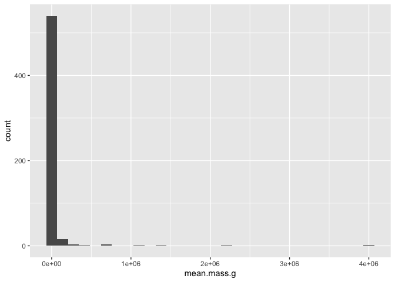
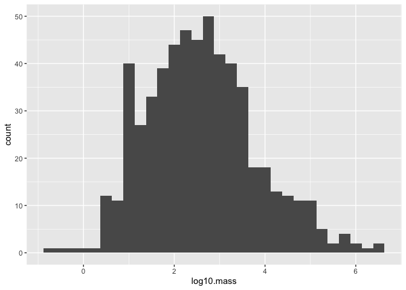
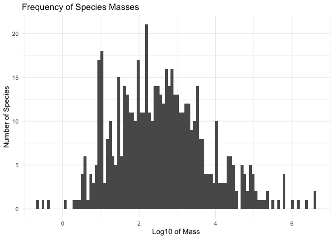
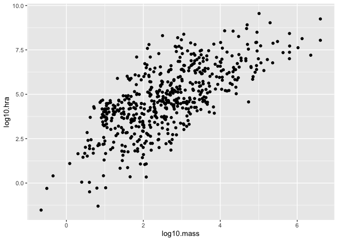
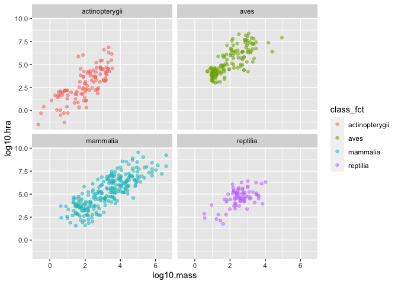
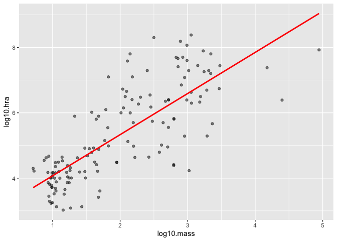
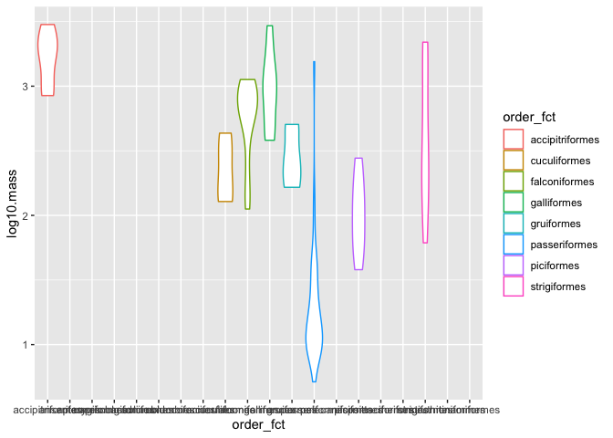
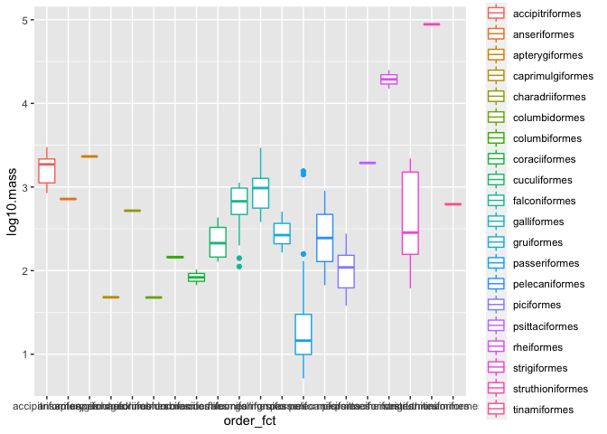
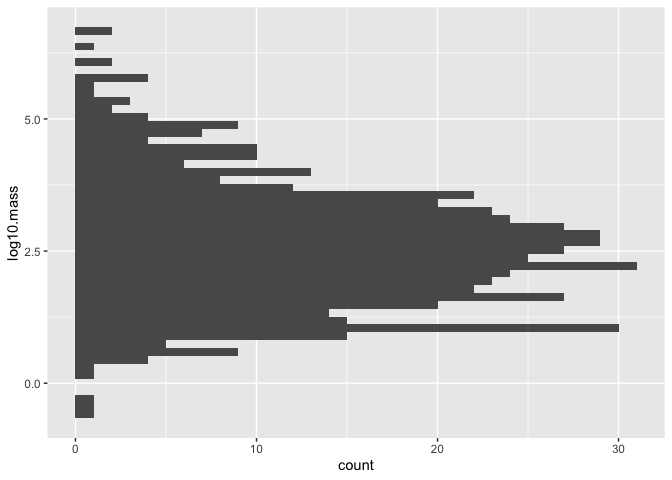

Chapter 5 Practice
We have covered a lot in the last few lessons, so this one presents some practice exercises to ground what we have learned and introduce a few more commonly-used functions.
5.1 Working with a single tidy table
- Load the tidyverse collection of package and the
herepackage for constructing paths:
library(tidyverse)
library(here)- Use
here::hereto construct a path to a file andreadr::read_csvto read that file:
path <- here::here("data", "person.csv")
person <- readr::read_csv(path)## Parsed with column specification:
## cols(
## person_id = [31mcol_character()[39m,
## personal_name = [31mcol_character()[39m,
## family_name = [31mcol_character()[39m
## )person## [90m# A tibble: 5 x 3[39m
## person_id personal_name family_name
## [3m[90m<chr>[39m[23m [3m[90m<chr>[39m[23m [3m[90m<chr>[39m[23m
## [90m1[39m dyer William Dyer
## [90m2[39m pb Frank Pabodie
## [90m3[39m lake Anderson Lake
## [90m4[39m roe Valentina Roerich
## [90m5[39m danforth Frank DanforthRead survey/site.csv.
- Count rows and columns using
nrowandncol:
nrow(person)## [1] 5ncol(person)## [1] 3How many rows and columns are in the site data?
- Format strings using
glue::glue:
print(glue::glue("person has {nrow(person)} rows and {ncol(person)} columns"))## person has 5 rows and 3 columnsPrint a nicely-formatted summary of the number of rows and columns in the site data.
- Use
colnamesto get the names of columns andpasteto join strings together:
print(glue::glue("person columns are {paste(colnames(person), collapse = ' ')}"))## person columns are person_id personal_name family_namePrint a nicely-formatted summary of the names of the columns in the site data.
- Use
dplyr::selectto create a new table with a subset of columns by name:
dplyr::select(person, family_name, personal_name)## [90m# A tibble: 5 x 2[39m
## family_name personal_name
## [3m[90m<chr>[39m[23m [3m[90m<chr>[39m[23m
## [90m1[39m Dyer William
## [90m2[39m Pabodie Frank
## [90m3[39m Lake Anderson
## [90m4[39m Roerich Valentina
## [90m5[39m Danforth FrankCreate a table with just the latitudes and longitudes of sites.
- Use
dplyr::filterto create a new table with a subset of rows by values:
dplyr::filter(person, family_name < "M")## [90m# A tibble: 3 x 3[39m
## person_id personal_name family_name
## [3m[90m<chr>[39m[23m [3m[90m<chr>[39m[23m [3m[90m<chr>[39m[23m
## [90m1[39m dyer William Dyer
## [90m2[39m lake Anderson Lake
## [90m3[39m danforth Frank DanforthCreate a table with only sites south of -48 degrees.
- Use the pipe operator
%>%to combine operations:
person %>%
dplyr::select(family_name, personal_name) %>%
dplyr::filter(family_name < "M")## [90m# A tibble: 3 x 2[39m
## family_name personal_name
## [3m[90m<chr>[39m[23m [3m[90m<chr>[39m[23m
## [90m1[39m Dyer William
## [90m2[39m Lake Anderson
## [90m3[39m Danforth FrankCreate a table with only the latitudes and longitudes of sites south of -48 degrees.
- Use
dplyr::mutateto create a new column with calculated values andstringr::str_lengthto calculate string length:
person %>%
dplyr::mutate(name_length = stringr::str_length(family_name))## [90m# A tibble: 5 x 4[39m
## person_id personal_name family_name name_length
## [3m[90m<chr>[39m[23m [3m[90m<chr>[39m[23m [3m[90m<chr>[39m[23m [3m[90m<int>[39m[23m
## [90m1[39m dyer William Dyer 4
## [90m2[39m pb Frank Pabodie 7
## [90m3[39m lake Anderson Lake 4
## [90m4[39m roe Valentina Roerich 7
## [90m5[39m danforth Frank Danforth 8Look at the help for the built-in function round and then use it to create a table with latitudes and longitudes rounded to integers.
- Use
dplyr::arrangeto order rows and (optionally)dplyr::descto impose descending order:
person %>%
dplyr::mutate(name_length = stringr::str_length(family_name)) %>%
dplyr::arrange(dplyr::desc(name_length))## [90m# A tibble: 5 x 4[39m
## person_id personal_name family_name name_length
## [3m[90m<chr>[39m[23m [3m[90m<chr>[39m[23m [3m[90m<chr>[39m[23m [3m[90m<int>[39m[23m
## [90m1[39m danforth Frank Danforth 8
## [90m2[39m pb Frank Pabodie 7
## [90m3[39m roe Valentina Roerich 7
## [90m4[39m dyer William Dyer 4
## [90m5[39m lake Anderson Lake 4Create a table sorted by decreasing longitude (i.e., most negative longitude last).
5.2 Working with grouped data
- Read
survey/measurements.csvand look at the data withView:
measurements <- readr::read_csv(here::here("data", "measurements.csv"))## Parsed with column specification:
## cols(
## visit_id = [32mcol_double()[39m,
## visitor = [31mcol_character()[39m,
## quantity = [31mcol_character()[39m,
## reading = [32mcol_double()[39m
## )View(measurements)- Find rows where
readingis not NA, save ascleaned, and report how many rows were removed:
cleaned <- measurements %>%
dplyr::filter(!is.na(reading))
nrow(measurements) - nrow(cleaned)## [1] 1Rewrite the filter expression to select rows where the visitor and quantity are not NA either and report the total number of rows removed.
- Group measurements by quantity measured and count the number of each (the column is named
nautomatically):
cleaned %>%
dplyr::group_by(quantity) %>%
dplyr::count()## [90m# A tibble: 3 x 2[39m
## [90m# Groups: quantity [3][39m
## quantity n
## [3m[90m<chr>[39m[23m [3m[90m<int>[39m[23m
## [90m1[39m rad 8
## [90m2[39m sal 7
## [90m3[39m temp 3Group by person and quantity measured.
- Find the minimum, average, and maximum for each quantity:
cleaned %>%
dplyr::group_by(quantity) %>%
dplyr::summarize(low = min(reading), mid = mean(reading), high = max(reading))## `summarise()` ungrouping output (override with `.groups` argument)## [90m# A tibble: 3 x 4[39m
## quantity low mid high
## [3m[90m<chr>[39m[23m [3m[90m<dbl>[39m[23m [3m[90m<dbl>[39m[23m [3m[90m<dbl>[39m[23m
## [90m1[39m rad 1.46 6.56 11.2
## [90m2[39m sal 0.05 9.24 41.6
## [90m3[39m temp -[31m21[39m[31m.[39m[31m5[39m -[31m18[39m[31m.[39m[31m7[39m -[31m16[39mLook at the range for each combination of person and quantity.
- Rescale salinity measurements that are greater than 1:
cleaned <- cleaned %>%
dplyr::mutate(reading = ifelse(quantity == 'sal' & reading > 1.0, reading/100, reading))
cleaned## [90m# A tibble: 18 x 4[39m
## visit_id visitor quantity reading
## [3m[90m<dbl>[39m[23m [3m[90m<chr>[39m[23m [3m[90m<chr>[39m[23m [3m[90m<dbl>[39m[23m
## [90m 1[39m 619 dyer rad 9.82
## [90m 2[39m 619 dyer sal 0.13
## [90m 3[39m 622 dyer rad 7.8
## [90m 4[39m 622 dyer sal 0.09
## [90m 5[39m 734 pb rad 8.41
## [90m 6[39m 734 lake sal 0.05
## [90m 7[39m 734 pb temp -[31m21[39m[31m.[39m[31m5[39m
## [90m 8[39m 735 pb rad 7.22
## [90m 9[39m 751 pb rad 4.35
## [90m10[39m 751 pb temp -[31m18[39m[31m.[39m[31m5[39m
## [90m11[39m 752 lake rad 2.19
## [90m12[39m 752 lake sal 0.09
## [90m13[39m 752 lake temp -[31m16[39m
## [90m14[39m 752 roe sal 0.416
## [90m15[39m 837 lake rad 1.46
## [90m16[39m 837 lake sal 0.21
## [90m17[39m 837 roe sal 0.225
## [90m18[39m 844 roe rad 11.2Do the same calculation use case_when.
- Read
visited.csv, drop the NAs and store invisits. Useanti_join()to find the measurements incleanedthat don’t have matches invisits:
visits <- readr::read_csv(here::here("data", "visited.csv")) %>%
dplyr::filter(!is.na(visit_date))## Parsed with column specification:
## cols(
## visit_id = [32mcol_double()[39m,
## site_id = [31mcol_character()[39m,
## visit_date = [34mcol_date(format = "")[39m
## )cleaned %>% anti_join(visits)## Joining, by = "visit_id"## [90m# A tibble: 4 x 4[39m
## visit_id visitor quantity reading
## [3m[90m<dbl>[39m[23m [3m[90m<chr>[39m[23m [3m[90m<chr>[39m[23m [3m[90m<dbl>[39m[23m
## [90m1[39m 752 lake rad 2.19
## [90m2[39m 752 lake sal 0.09
## [90m3[39m 752 lake temp -[31m16[39m
## [90m4[39m 752 roe sal 0.416Are there any sites in visits that don’t have matches in cleaned?
- Join
visitswith the cleaned-up table of readings:
cleaned <- visits %>%
dplyr::inner_join(cleaned, by = c("visit_id" = "visit_id"))
cleaned## [90m# A tibble: 14 x 6[39m
## visit_id site_id visit_date visitor quantity reading
## [3m[90m<dbl>[39m[23m [3m[90m<chr>[39m[23m [3m[90m<date>[39m[23m [3m[90m<chr>[39m[23m [3m[90m<chr>[39m[23m [3m[90m<dbl>[39m[23m
## [90m 1[39m 619 DR-1 1927-02-08 dyer rad 9.82
## [90m 2[39m 619 DR-1 1927-02-08 dyer sal 0.13
## [90m 3[39m 622 DR-1 1927-02-10 dyer rad 7.8
## [90m 4[39m 622 DR-1 1927-02-10 dyer sal 0.09
## [90m 5[39m 734 DR-3 1930-01-07 pb rad 8.41
## [90m 6[39m 734 DR-3 1930-01-07 lake sal 0.05
## [90m 7[39m 734 DR-3 1930-01-07 pb temp -[31m21[39m[31m.[39m[31m5[39m
## [90m 8[39m 735 DR-3 1930-01-12 pb rad 7.22
## [90m 9[39m 751 DR-3 1930-02-26 pb rad 4.35
## [90m10[39m 751 DR-3 1930-02-26 pb temp -[31m18[39m[31m.[39m[31m5[39m
## [90m11[39m 837 MSK-4 1932-01-14 lake rad 1.46
## [90m12[39m 837 MSK-4 1932-01-14 lake sal 0.21
## [90m13[39m 837 MSK-4 1932-01-14 roe sal 0.225
## [90m14[39m 844 DR-1 1932-03-22 roe rad 11.2Join visited.csv with site.csv to get (date, latitude, longitude) triples for site visits.
- Find the dates of the highest radiation reading at each site:
cleaned %>%
dplyr::filter(quantity == "rad") %>%
dplyr::group_by(site_id) %>%
dplyr::mutate(max_rad = max(reading)) %>%
dplyr::filter(reading == max_rad)## [90m# A tibble: 3 x 7[39m
## [90m# Groups: site_id [3][39m
## visit_id site_id visit_date visitor quantity reading max_rad
## [3m[90m<dbl>[39m[23m [3m[90m<chr>[39m[23m [3m[90m<date>[39m[23m [3m[90m<chr>[39m[23m [3m[90m<chr>[39m[23m [3m[90m<dbl>[39m[23m [3m[90m<dbl>[39m[23m
## [90m1[39m 734 DR-3 1930-01-07 pb rad 8.41 8.41
## [90m2[39m 837 MSK-4 1932-01-14 lake rad 1.46 1.46
## [90m3[39m 844 DR-1 1932-03-22 roe rad 11.2 11.2Another way to do it:
cleaned %>%
dplyr::filter(quantity == "rad") %>%
dplyr::group_by(site_id) %>%
dplyr::top_n(1, reading) %>%
dplyr::select(site_id, visit_date, reading)## [90m# A tibble: 3 x 3[39m
## [90m# Groups: site_id [3][39m
## site_id visit_date reading
## [3m[90m<chr>[39m[23m [3m[90m<date>[39m[23m [3m[90m<dbl>[39m[23m
## [90m1[39m DR-3 1930-01-07 8.41
## [90m2[39m MSK-4 1932-01-14 1.46
## [90m3[39m DR-1 1932-03-22 11.2Explain why this doesn’t work.
cleaned %>%
dplyr::filter(quantity == "rad") %>%
dplyr::group_by(site_id) %>%
dplyr::summarize(max_rad = max(reading)) %>%
dplyr::ungroup() %>%
dplyr::filter(reading == max_rad)## `summarise()` ungrouping output (override with `.groups` argument)## Error: Problem with `filter()` input `..1`.
## [31m✖[39m object 'reading' not found
## [34mℹ[39m Input `..1` is `reading == max_rad`.- Normalize radiation against the highest radiation seen per site:
cleaned %>%
dplyr::filter(quantity == "rad") %>%
dplyr::group_by(site_id) %>%
dplyr::mutate(
max_rad = max(reading),
frac_rad = reading / max_rad) %>%
dplyr::select(visit_id, site_id, visit_date, frac_rad)## [90m# A tibble: 7 x 4[39m
## [90m# Groups: site_id [3][39m
## visit_id site_id visit_date frac_rad
## [3m[90m<dbl>[39m[23m [3m[90m<chr>[39m[23m [3m[90m<date>[39m[23m [3m[90m<dbl>[39m[23m
## [90m1[39m 619 DR-1 1927-02-08 0.873
## [90m2[39m 622 DR-1 1927-02-10 0.693
## [90m3[39m 734 DR-3 1930-01-07 1
## [90m4[39m 735 DR-3 1930-01-12 0.859
## [90m5[39m 751 DR-3 1930-02-26 0.517
## [90m6[39m 837 MSK-4 1932-01-14 1
## [90m7[39m 844 DR-1 1932-03-22 1Normalize salinity against mean salinity by site.
- Find stepwise change in radiation per site by date:
cleaned %>%
dplyr::filter(quantity == "rad") %>%
dplyr::group_by(site_id) %>%
dplyr::mutate(delta_rad = reading - dplyr::lag(reading)) %>%
dplyr::arrange(site_id, visit_date)## [90m# A tibble: 7 x 7[39m
## [90m# Groups: site_id [3][39m
## visit_id site_id visit_date visitor quantity reading delta_rad
## [3m[90m<dbl>[39m[23m [3m[90m<chr>[39m[23m [3m[90m<date>[39m[23m [3m[90m<chr>[39m[23m [3m[90m<chr>[39m[23m [3m[90m<dbl>[39m[23m [3m[90m<dbl>[39m[23m
## [90m1[39m 619 DR-1 1927-02-08 dyer rad 9.82 [31mNA[39m
## [90m2[39m 622 DR-1 1927-02-10 dyer rad 7.8 -[31m2[39m[31m.[39m[31m0[39m[31m2[39m
## [90m3[39m 844 DR-1 1932-03-22 roe rad 11.2 3.45
## [90m4[39m 734 DR-3 1930-01-07 pb rad 8.41 [31mNA[39m
## [90m5[39m 735 DR-3 1930-01-12 pb rad 7.22 -[31m1[39m[31m.[39m[31m19[39m
## [90m6[39m 751 DR-3 1930-02-26 pb rad 4.35 -[31m2[39m[31m.[39m[31m87[39m
## [90m7[39m 837 MSK-4 1932-01-14 lake rad 1.46 [31mNA[39mFind length of time between visits by site.
- Find sites that experience any stepwise increase in radiation between visits:
cleaned %>%
dplyr::filter(quantity == "rad") %>%
dplyr::group_by(site_id) %>%
dplyr::mutate(delta_rad = reading - dplyr::lag(reading)) %>%
dplyr::filter(!is.na(delta_rad)) %>%
dplyr::summarize(any_increase = any(delta_rad > 0)) %>%
dplyr::filter(any_increase)## `summarise()` ungrouping output (override with `.groups` argument)## [90m# A tibble: 1 x 2[39m
## site_id any_increase
## [3m[90m<chr>[39m[23m [3m[90m<lgl>[39m[23m
## [90m1[39m DR-1 TRUEFind sites with visits more than one year apart.
5.3 Creating charts
We will use data on the mass and home range area (HRA) of various species from:
Tamburello N, Côté IM, Dulvy NK (2015) Data from: Energy and the scaling of animal space use. Dryad Digital Repository. https://doi.org/10.5061/dryad.q5j65
hra <- readr::read_csv(here::here("data", "home-range-database.csv"))## Parsed with column specification:
## cols(
## .default = col_character(),
## mean.mass.g = [32mcol_double()[39m,
## log10.mass = [32mcol_double()[39m,
## mean.hra.m2 = [32mcol_double()[39m,
## log10.hra = [32mcol_double()[39m,
## preymass = [32mcol_double()[39m,
## log10.preymass = [32mcol_double()[39m,
## PPMR = [32mcol_double()[39m
## )## See spec(...) for full column specifications.head(hra)## [90m# A tibble: 6 x 24[39m
## taxon common.name class order family genus species primarymethod N
## [3m[90m<chr>[39m[23m [3m[90m<chr>[39m[23m [3m[90m<chr>[39m[23m [3m[90m<chr>[39m[23m [3m[90m<chr>[39m[23m [3m[90m<chr>[39m[23m [3m[90m<chr>[39m[23m [3m[90m<chr>[39m[23m [3m[90m<chr>[39m[23m
## [90m1[39m lake… american e… acti… angu… angui… angu… rostra… telemetry 16
## [90m2[39m rive… blacktail … acti… cypr… catos… moxo… poecil… mark-recaptu… [31mNA[39m
## [90m3[39m rive… central st… acti… cypr… cypri… camp… anomal… mark-recaptu… 20
## [90m4[39m rive… rosyside d… acti… cypr… cypri… clin… fundul… mark-recaptu… 26
## [90m5[39m rive… longnose d… acti… cypr… cypri… rhin… catara… mark-recaptu… 17
## [90m6[39m rive… muskellunge acti… esoc… esoci… esox masqui… telemetry 5
## [90m# … with 15 more variables: mean.mass.g [3m[90m<dbl>[90m[23m, log10.mass [3m[90m<dbl>[90m[23m,[39m
## [90m# alternative.mass.reference [3m[90m<chr>[90m[23m, mean.hra.m2 [3m[90m<dbl>[90m[23m, log10.hra [3m[90m<dbl>[90m[23m,[39m
## [90m# hra.reference [3m[90m<chr>[90m[23m, realm [3m[90m<chr>[90m[23m, thermoregulation [3m[90m<chr>[90m[23m, locomotion [3m[90m<chr>[90m[23m,[39m
## [90m# trophic.guild [3m[90m<chr>[90m[23m, dimension [3m[90m<chr>[90m[23m, preymass [3m[90m<dbl>[90m[23m, log10.preymass [3m[90m<dbl>[90m[23m,[39m
## [90m# PPMR [3m[90m<dbl>[90m[23m, prey.size.reference [3m[90m<chr>[90m[23m[39m- Look at how mass is distributed:
ggplot2::ggplot(hra, mapping = aes(x = mean.mass.g)) +
ggplot2::geom_histogram()## `stat_bin()` using `bins = 30`. Pick better value with `binwidth`.
Try again with log10.mass:
ggplot2::ggplot(hra, mapping = aes(x = log10.mass)) +
ggplot2::geom_histogram()## `stat_bin()` using `bins = 30`. Pick better value with `binwidth`.
Create histograms showing the distribution of home range area using linear and log scales.
- Change the visual appearance of a chart:
ggplot2::ggplot(hra, mapping = aes(x = log10.mass)) +
ggplot2::geom_histogram(bins = 100) +
ggplot2::ggtitle("Frequency of Species Masses") +
ggplot2::xlab("Log10 of Mass") +
ggplot2::ylab("Number of Species") +
ggplot2::theme_minimal()
Show the distribution of home range areas with a dark background.
- Create a scatterplot showing the relationship between mass and home range area:
ggplot2::ggplot(hra, mapping = aes(x = log10.mass, y = log10.hra)) +
ggplot2::geom_point()
Create a similar scatterplot showing the relationship between the raw values rather than the log values.
- Colorize scatterplot points by class:
hra %>%
dplyr::mutate(class_fct = as.factor(class)) %>%
ggplot2::ggplot(mapping = aes(x = log10.mass, y = log10.hra, color = class_fct)) +
ggplot2::geom_point(alpha = 0.5)
Group by order and experiment with different alpha values.
- Create a faceted plot:
hra %>%
dplyr::mutate(class_fct = as.factor(class)) %>%
ggplot2::ggplot(mapping = aes(x = log10.mass, y = log10.hra, color = class_fct)) +
ggplot2::geom_point(alpha = 0.5) +
ggplot2::facet_wrap(vars(class_fct))
Create a plot faceted by order for just the reptiles.
- Fit a linear regression to the logarithmic data for birds:
hra %>%
dplyr::filter(class == "aves") %>%
ggplot2::ggplot(mapping = aes(x = log10.mass, y = log10.hra)) +
ggplot2::geom_point(alpha = 0.5) +
ggplot2::geom_smooth(method = lm, color = 'red', se = FALSE)## `geom_smooth()` using formula 'y ~ x'
Fit a line to the raw data for birds rather than the logarithmic data.
- Create a violin plot of mass by order for birds:
hra %>%
dplyr::filter(class == "aves") %>%
dplyr::mutate(order_fct = as.factor(order)) %>%
ggplot2::ggplot(mapping = aes(x = order_fct, y = log10.mass, color = order_fct)) +
ggplot2::geom_violin()
Rotate the labels on the X axis to make this readable, then explain the gaps.
- Display the same data as a boxplot:
hra %>%
dplyr::filter(class == "aves") %>%
dplyr::mutate(order_fct = as.factor(order)) %>%
ggplot2::ggplot(mapping = aes(x = order_fct, y = log10.mass, color = order_fct)) +
ggplot2::geom_boxplot()
Fix the labels and remove orders that only contain one species.
- Save the linear regression plot for birds as a PNG:
hra %>%
dplyr::filter(class == "aves") %>%
ggplot2::ggplot(mapping = aes(x = log10.mass, y = log10.hra)) +
ggplot2::geom_point(alpha = 0.5) +
ggplot2::geom_smooth(method = lm, color = 'red', se = FALSE)## `geom_smooth()` using formula 'y ~ x'
ggsave(here::here("birds.png"))## Saving 7 x 5 in image
## `geom_smooth()` using formula 'y ~ x'Save the plot as SVG scaled to be 8cm wide.
- Create a horizontal histogram with 50 bins:
ggplot2::ggplot(hra, mapping = aes(x = log10.mass)) +
ggplot2::geom_histogram(bins = 50) +
ggplot2::coord_flip()
Use stat_summary to summarize the relationship between mass and home range area by class.